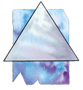
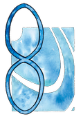
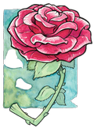
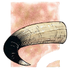
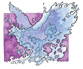
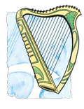
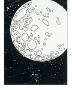

I. Işığın Tanrıları
Paladin (Ejderhaların Lordu): Paladin, İyiliğin Babası ve Adaletin Ustası'dır. Tüm iyilik tanrıların yöneticisidir ve en yücesidir. Dünya üzerinde tarikat olarak Solamniya Şövalyeleri'nin, özellikle de Gül Tarikatı'nın tanrısıdır. Kontrolü altındaki alanlar arasında düzen, umut, ışık, yöneticilik ve koruyuculuk vardır. Sembolleri gümüş üçgen, çam ağacı (Silvanesti) ya da örs (Thorbardin) tür. Renkleri gümüş ve beyazdır. Takımyıldızı, Platin Ejderha takımyıldızıdır. Paladin'in avatarları Muhteşem Fizban ve bir platin ejderhadır. Diğer isimleriyse bölgelerine göre şunlardır: Draco Paladin (Ergoth), Gökyüzübıçağı (Goodlund), Ejderhalordu (Mithas), E'li (Silvanesti), Çekiç Thak (Thorbardin), Bah'Mut (İstar), Büyük Ejderha (Solamniya), Fizban (Kenderyurdu).
Mishakal (Şifalı El): Mishakal, Krynn üzerinde "Şifacı" adıyla tanınır. Paladin'in eşi ve Habbakuk, Kiri-Jolith ve Solinari'nin annesidir. Kontrolü altındaki alanlar arasında şifa, bilgi, verimlilik, yaşam, güzellik ve kutsama vardır. Sembolü, mavi sonsuzluk işaretidir. Rengi, mavinin herhangi bir tonudur. Takımyıldızı, sonsuzluk işareti takımyıldızıdır. Mishakal'ın avatarları arasında en çok kullandığı, eşsiz bir sağlığa ve fiziksel kondisyona sahip güzel bir kadındır. Diğer isimleriyse bölgelerine göre şunlardır: Ka-Mel-Sha, Yuvadaki Şifacı (Kharolis/Tarsis), Mesalax (Thorbardin), Meshal (Buzduvarı), Mishas (Ergoth), Quenesti Pah (Silvanesti), Quen Illumini (Qualinesti), Gökyüzühanımı (Goodlund), Mavi Leydi (Balifor, Hylo), İmparatoriçe (Mithas), Işığın Kaynağı, Işık Getirici (Solamniya).
Majere (Zihnin Efendisi): Majere, organizasyonların ve endüstrinin tanrısıdır. Kontrolü altındaki alanlar arasında meditasyon, kontrol, düşünce, güven, merhamet ve ilham vardır. Sembolleri bakır örümcek, bir tek gül (Qualinesti, Silvanesti) ya da peygamberdevesi (Solamniya) dir. Renkleri, bakır rengi ve kırmızıdır. Takımyıldızı, Gül takımyıldızıdır. Majere dünya üzerinde ya öğüt veren güzel, kör bir bayan ya da kel, kambur ama kadim olan bir adam şeklinde görünür. Diğer isimleriyse bölgelerine göre şunlardır: Manthus (Ergoth), Gül'ün Peygamberdevesi (Qualinesti), Mantheri (Silvanesti), Rüyagönderici Nadir (Mithas).
Kiri-Jolith (Adaletin Kılıcı): Kiri-Jolith zafer, şeref, itaat, adalet ve adaletli savaşımın tanrısıdır. Solamniya Şövalyeleri arasındaki Kılıç Tarikatı'nın tanrısıdır. Kontrolü altındaki alanlar arasında savaş, cesaret ve kahramanlık vardır. Sembolleri, bizonun boynuzları ya da boynuzlu savaş baltası (Thorbardin, Kharolis) dır. Renkleri kahverengi ve beyazdır. Takımyıldızı, bir bizon kafası şeklindedir. Avatarı büyük bir savaş baltasına sahip dev gibi bir minotordur. Diğer isimleriyse bölgelerine göre şunlardır: Corij (Ergoth), Bıçak Kijo (Thorbardin), Jolith (Kharolis/Tarsis), Savaşçı Qu'an (Uigan), İmparator (Mithas).
Habbakuk (Balıkçı Kral): Habbakuk, Kiri-Jolith'in genç ikizidir ve deniz ve toprak üzerindeki tüm hayatı yaratan ve yöneten tanrıdır. Özellikle orman koruyucuları ve denizciler tarafından sevilir. Kontrolü altındaki alanlar arasında hayvan yaşamı, deniz, yaratım ve hırs vardır. Sembolleri mavi kuş ya da mavi zümrüdüanka (Ergoth) dır. Renkleri deniz mavisi ve beyazdır. Takımyıldızı bir zümrüdüanka şeklindedir. Avatarları çok çeşitlidir; karada büyük mavi bir kuş ya da mavi ateşlerle parlayan bir zümrüdüanka, denizdeyse dev, mavi bir yunustur. Diğer isimleriyse, bölgelerine göre şunlardır: Mavi Zümrüdüanka (Ergoth, Silvanesti, Qualinesti), Gökyüzülordu (Balifor, Goodlund), Deniz Lordu (Mithas).
Branchala (Yaşamın Şarkısı): Ozan Kralı Branchala, Krynn'de yaşayan yaratıklarının ruhlarını, kendi ölümsüz ruhunun özü olan müziğin yardımıyla oluşturan bir tanrıdır. Kontrolü altındaki alanlar arasında elfler, kenderler, müzik, ormanlar ve güzellik vardır. Sembolleri ozan harbı ya da flüt (Goodlund, Qualinesti, Silvanesti) tür. Renkleri sarı ve yeşildir. Takımyıldızı bir harp şeklindedir. Avatarları bulundukları bölgenin insanlarına benzerler ve halkın arasına karışmışlardır. Genellikle bir oduncu, orman koruyucusu, bir ozan, hatta bir dinsiz (yalancı) rahip bile olabilir. Diğer isimleriyse, bölgelerine göre şunlardır: Müzikefendisi (Goodlund), Astra (Qualinesti), Astarin (Silvanesti), Bran (Ergoth), Bahçıvan (Mithas), Bardilun (Thorbardin).
Solinari (Güçlü El): Paladin ve Mishakal'ın üçüncü oğlu olan Solinari, Beyaz Cübbeliler'in ve iyi büyünün tanrısıdır. Krynn'i oldukça fazla sevmesinden dolayı, onu iyi büyüyle ödüllendirmiştir. Kontrolü altındaki tek alan İyi Büyü'dür. Sembolleri beyaz daire ya da beyaz küredir. Takımyıldızı yoktur fakat dünyaya ay olarak görünür – Beyaz ay Solinari olarak. Krynn'e diğer tanrılara göre daha yakın olmasına karşın (ayının yakın olmasından dolayı) çok nadiren dünya üzerinde avatar şeklinde görünür. Diğer isimleriyse, bölgelerine göre şunlardır: Solin (Ergoth), Beyaz-göz (Goodlund, Balifor), Tanrı'nın Gözü (Thorbardin), Fildişi Disk (Hylo), Deniz Feneri (Mithas).